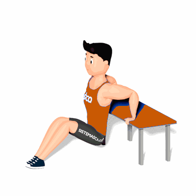

Tríceps Banco

Exercício para fortalecimento e hipertrofia dos músculos tríceps, com enfoque o tríceps braquial.
Ficha Técnica
Tipo: Musculação
Grupo Muscular: Tríceps
Aparelho: Nenhum
Músculos: Nenhum
Como realizar
- Sente sobre um banco e apoie as mãos próximas do corpo;
- Apoiar os pés no solo à frente com os joelhos ligeiramente flexionados;
- Suspenda o corpo para frente e os braços estendidos nas extremidades do banco;
- Manter a coluna alinhada e abdome contraído, essa é a posição inicial do exercício;
- Desça o corpo de forma controlada, flexionando os cotovelos o máximo que conseguir;
- Retorne à posição inicial estendendo os cotovelos;
- Concentre todo esforço nos músculos do tríceps, repita os movimentos.
 RC STORE
RC STORE